Georgetown welcomes alumni, family, and friends of the university for a weekend of social, cultural, and intellectual engagement at John Carroll Weekend Austin 2017. A trademark celebration of the Georgetown University Alumni Association, this exciting annual event has brought together the Hoya community since 1952. Access some of Austin’s most prestigious venues and historic landmarks as you experience the “Live Music Capital of the World” and engage with fellow Hoyas from around the globe April 20-23, 2017, during four days of specially curated events and excursions.
John Carroll Weekend will provide an opportunity to experience the thrills of Austin as members of the Georgetown community from around the world converge in this center of technology, art, music, and business.
Since 1952, John Carroll Weekend has assembled the global Georgetown community along with alumni, parents and friends to celebrate the best of Georgetown in a different city each year. The weekend of educational, social and cultural events offers participants the chance to learn more about the host city while engaging with one another and with Georgetown's outstanding faculty and university leaders.
Hotel accommodations are still available downtown, all within walking distance of event programs. Book your rooms today or find lodging in the area with Airbnb
Get a sneak peek at the sights and sounds of Austin, Texas with these select videos featuring the best of the city, and view highlights from exciting past editions of John Carroll Weekend. Each year and location is special and exciting in its own way, and Austin will be no exception!
Three renowned Austin venues have been selected for this year's signature events. Register for these exciting events today.

The Austin adventure kicks off with an evening reception at the Driskill Hotel. Built in 1886 as the showplace of a cattle baron, The Driskill is regarded as a landmark of legendary Texas hospitality. President John J. DeGioia will welcome members of the Georgetown community to celebrate and reconnect amongst a unique blend of contemporary and historical artwork. Enjoy cocktails and hors d’oeuvres with fellow Hoyas at one of the world’s finest hotels in the center of downtown Austin.

Grab your best jeans and pull on your boots for a casual, Texas-style party at Bullock Texas State History Museum. The beautiful, mosaic-tiled entryway will captivate guests, while the open layout paves the way for a fascinating introduction to Texas’ intriguing narrative. Reconnect with classmates and make new Hoya friends as you enjoy cocktails amidst relics that span centuries and view film and interactive media experiences that represent Texas’ distinctive history.

The highlight of the weekend will be the John Carroll Awards Banquet, a black tie gala that will take place at the acclaimed Long Center, a mecca of performing arts. Enjoy a magnificent meal and unmatched views of the Austin skyline on the iconic City Terrace. After dinner, the Alumni Association will present its highest honor to six alumni and one friend of the university in recognition of their dedication to Georgetown’s mission of service and leadership.
Each John Carroll Weekend culminates with a banquet celebrating the John Carroll and Patrick Healy Award recipients. These awards are conferred upon alumni whose achievements and records of service exemplify the ideals and traditions of Georgetown and it's founder.
The Georgetown University Alumni Association established the John Carroll Award in 1952 to honor alumni whose achievements exemplify the ideals and traditions of Georgetown University and its founder, Archbishop John Carroll. The John Carroll Award is the highest honor bestowed by the GUAA.
Dr. Anthony Arend (F’80) - Washington, D.C.
Maureen Rutter Brown (C’81, Parent'14) - Jackson, Wyo.
Mary Beth Connell (M’89, Parent'17) - Bethesda, Md.
Albert del Castillo Sr. (C’79, L’82, Parent'10,'10,'18) - Miami Lakes, Fla.
Gail Gillis-Louis (C’75) - Washington, D.C.
John Reagan (B’84) - Dallas, Texas
Dean Chester Gillis (Parent'08) - Washington, D.C.
All alumni have the opportunity to nominate their fellow Hoyas for the John Carroll and Patrick Healy Awards. These nominations are reviewed by the Awards Committee of the GUAA Board of Governors.